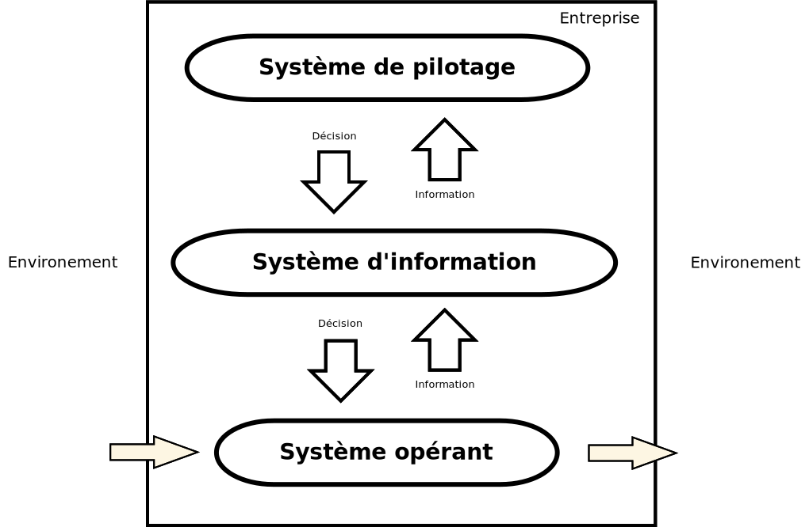
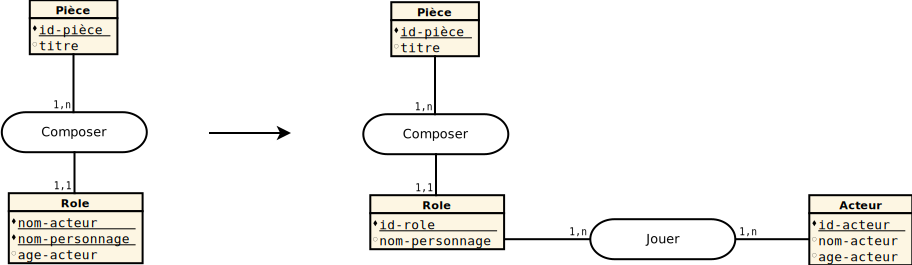

Modélisation des Systèmes d'Information
Université Paris Ouest Nanterre La Défense
MIAGE - L3
Information
Données susceptibles d'être représentées pour être conservées, traitées ou communiquées. Larousse


Système
Ensemble d'éléments considérés dans leurs relations à l'intérieur d'un tout fonctionnant de manière unitaire Larousse
Système d'Information
Un système d'information (SI) est un ensemble organisé de ressources permettant de collecter, stocker, traiter et diffuser de l'information R. De Courcy

Analyse systémique
Vue d'un ensemble (organisation) sous forme de système
- complexe (différentes parties)
- cohérent (parties organisées)
- complet (pas de partie manquante)
- récursif (composé de sous-systèmes)
Analyse systémique
Qualités du SI
Aide à la décision (organiser, informer, interpréter, prévoir)
- Pertinence
- Rapidité
- Fiabilité
- Sécurité
- Rentabilité
Composants du SI
- Outils (logiciels, matériels, protocoles)
- Infrastructure (réseaux)
- Procédures
- Humains (utilisateurs, acteurs)
Exercice 1
Décrire le système d'information d'une boulangerie
Des problèmes ?
manque de temps, d'homogénéité, de structure, de communication, ...
besoin d'une démarche , de techniques et d'outils
Merise
Méthode d'analyse, de conception et de gestion de projet informatique Wikipedia
- niveaux d'abstraction
- méthodes, outils (formalismes)
- lourdeur
Conseil : Adapter, choisir ce qui est utile
Découplage
- données : structures, relations
- traitements : flux de données internes et externes, manipulation des données
Dimensions
- Cycle de décision (résultats produits par le SI)
- Cycle de vie (conception, mise en oeuvre, évolution d'un SI)
- Cycle d'abstraction (modélisation du SI)
Cycle d'abstraction
- Expression des besoins
- niveau Conceptuel : fondamentaux, stable, indépendant
- niveau Organisationel : personnes, matériel
- niveau Logique : outils, indépendant
- niveau Physique: outils, technique
Outils
| Besoins | DD1 | DF/MF2 | |
| Conceptuel | MCC3 | ||
| Quoi ? | MCD4 | MCT6 | |
| Organisationel | Qui ? Où ? | MOD5 | MOT7 |
| Logique | Comment ? | MLD8 | MLT |
| Physique | Comment ? | MPD | MPT |
Recueil des besoins
- But : lister les informations et leurs flux
- Existant : collecter les données existantes (documents, normes, entretiens)
- Analyse : déterminer les entrées, les sorties et les flux de l'un à l'autre
Exercice 2
Recueillir les besoins du SI d'une boulangerie
Exercice 3
Recueillir les besoins du SI d'une start-up souhaitant transformer les possesseurs de machine à pain en boulangerie de voisinage
Dictionnaire de données (DD)
lister les données
- Classifier : données élémentaires, calculées, composées
- Typer : définir les types et les formats des données
- Épurer : supprimer les doublons, spécifier, déterminer les contraintes
DD : exemple
| Mnémonique | Description | Type | Format | Divers | Exemple |
|---|---|---|---|---|---|
| id-produit | identifiant d'un produit | entier | - | séquentiel | 1 |
| nom-produit | nom d'un produit | texte | 50 cactères max | - | boite de haricots verts |
| prix-produit | prix du produit | décimal | - | en euros | 1.00 |
| date-peremption | date de péremption | date | jj/mm/yyyy | - | 06/10/2015 |
Exercice 4
Écrire les dictionnaires de données de nos deux petites entreprises
Matrice des flux (MF)
bilans des activités des acteurs
- Définir : (émetteur, récepteur, nature)
- Sélectionner : nécessaires (besoin d'un récepteur)
MF : exemple
| Fournisseur | Gestion des achats | Gestion des stocks | |
|---|---|---|---|
| Fournisseur | - |
|
|
| Gestion des achats |
|
- | |
| Gestion des stocks | - |
|
Exercice 5
Ecrire les matrices de flux de nos deux petites entreprises
Diagramme de flux (DF)
Décomposition en domaines d'activité
- Domaine : ensemble d'activités avec une finalité commune (gestion des stocks, vente, ...)
- Acteurs : intervenants du système, émetteur ou récepteur de flux (interne/externe, domaine, ...)
- Décomposition en sous-domaines
DF : formalisme
DF : exemple

DF : exemple

Exercice 6
Ecrire les diagrames de flux de nos deux petites entreprises
Modèle Conceptuel de Communication (MCC)
Description des flux de données
- Message : transmission d'une information complète
- Réalisation : chronologique (assure la cohérence), exhaustive
MCC : exemple
Exercice 7
Écrire les MCC de nos deux petites entreprises
Modèle Conceptuel de Données (MCD)
Décrire les entités et les associations définissant les données
- Propriété : donnée du SI unique
- Entité : ensemble cohérent de propriétés
- Association : lien entre entités
MCD : propriété
Donnée élémentaire, atomique et unique
- issue du DD
- liée à une entité
- composée mais pas décomposable
- numéro de sécurité sociale
- adresse ?
MCD : entité
Élément ayant une existence propre et cohérent avec le SI
- définie par un nom
- possède un identifiant unique
- est composée d'au moins une propriété
- participe à au moins une association
MCD : association
Élément perçu mais sans existence propre
- définie par un verbe
- liée à une (réflexive) ou plusieurs entités (binaires ou n-aires)
- porteuse de cardinalités
- occurrences minimale [0, 1] des entités associées
- occurrences minimale [1, n] des entités associées
- peut être composée de propriétés
MCD : formalisme

MCD : exemple

MCD : validation
- Assurer la cohérence du MCD
- éviter les redondances d'information
par respect de l'unicité des propriétés
par normalisation
MCD : normalisation
Respect des 3 premières formes normales
- aucune propriété n'est décomposable ou répétitive
- une seule valeur possible
- toute propriété dépend de la totalité de l'identifiant
- toute propriété dépend directement de l'identifiant
- pas de transitivité
MCD : validation
Valeurs multiples

MCD : validation
Dépendance sur une partie de clé
MCD : validation
Dépendance transitive
Exercice 8
Corriger la partie de MCD suivante
Exercice 9
Ecrire les MCD de nos deux petites entreprises
Ressources
Slides faits avec Reveal.js
Icones par Creative Stall et Ben Rizzo